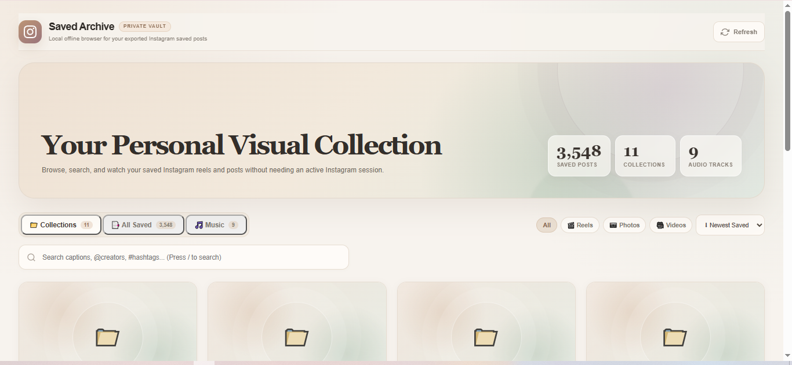

01
You want to delete Instagram No problem
Download your Instagram data export first. Find the saved folder inside your Instagram data export.
Instagram can take more of your time than you want to give it. If you're ready to leave, there's one thing worth taking with you: the posts and Reels you saved.
Instagram gives you an export, but your saved posts can end up as plain HTML pages that are difficult to browse. That's not a library. That's where this app comes in.

Your plain Instagram export, turned into a library you can actually browse.
You don't need to understand Python or coding. Choose the option that feels right for you.
saved→saved folderAfter downloading and unzipping your Instagram data, open the folders until you find saved. You should see files similar to:
saved/ ├── saved_posts.html ├── saved_collections.html └── saved_music.html
On GitHub, click Code → Download ZIP, unzip it, and move the app folder into the same saved folder:
saved/
├── saved_posts.html
├── saved_collections.html
├── saved_music.html
└── instagram-saved-library/
├── run.bat
├── app.py
└── public/
With Python installed, double-click run.bat. A browser window opens with your library. You do not need to type commands or know how to program.
Use the official Python website. During installation, if the installer shows “Add Python to PATH”, make sure it is checked before installing.
Official Python download ↗Use the browser-only method above. It works without Python, but you will select your exported HTML files each time.
Simple guides about Instagram exports, saved posts, saved Reels and keeping your library.
{{ post.description | default: post.excerpt | strip_html | truncate: 125 }}
Read guide → {% endfor %}Request your Instagram data export, include Saved items, then open the export with Instagram Saved Library.
This app turns the exported HTML saved-post data into a visual, searchable library instead of plain files.
You can keep the exported saved links and library on your computer so you can revisit them outside Instagram.
No. The app is designed to run locally with your exported files. No Instagram login is required.
Download your Instagram data. Put the app inside its saved folder. Open your library. That's it.
Get the free app